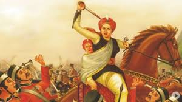
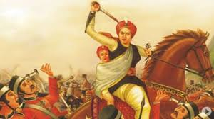

Rani of Jhansi
 

Lakshmibai Newalkar, the Rani of Jhansi or Jhansi ki Rani widely known as Rani Lakshmibai (pronunciationⓘ; born Manikarnika Tambe; 19 November 1828 — 18 June 1858),[1][2] was the Maharani consort of the princely state of Jhansi in the Maratha Empire from 1843 to 1853 by marriage to Maharaja Gangadhar Rao Newalkar. She was one of the leading figures in the Indian Rebellion of 1857, who became a national hero and symbol of resistance to the British rule in India for Indian nationalists.
Born into a Marathi Karhade Brahmin family in Banares, Lakshmibai married the Maharaja of Jhansi, Gangadhar Rao, in 1842. When the Maharaja died in 1853, the British East India Company under Governor-General Lord Dalhousie refused to recognize the claim of his adopted heir and annexed Jhansi under the Doctrine of Lapse. The Rani was unwilling to cede control and joined the rebellion against the British in 1857. She led the successful defense of Jhansi against Company allies, but in early 1858 Jhansi fell to British forces under the command of Hugh Rose. The Rani managed to escape on horseback and joined the rebels in capturing Gwalior, where they proclaimed Nana Saheb as Peshwa of the revived Maratha Empire. She died in June 1858 after being mortally wounded during the British counterattack at Gwalior.
Rani Lakshmibai was accustomed to riding on horseback accompanied by escorts between the palace and the temple, although sometimes she was carried in a palanquin.[17] Her horses included Sarangi, Pavan, and Baadal; according to historians, she rode Baadal when escaping from the fort in 1858. Her palace, the Rani Mahal, has now been converted into a museum. It houses a collection of archaeological remains of the period between the 9th and 12th centuries AD.